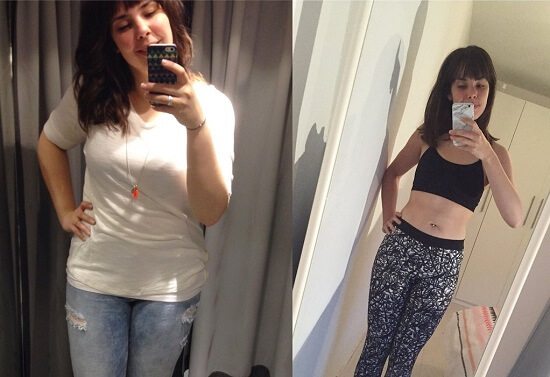
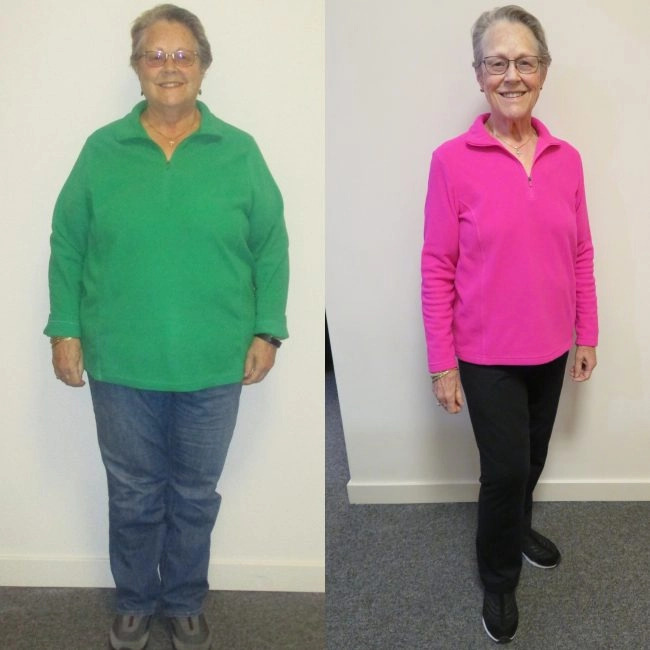
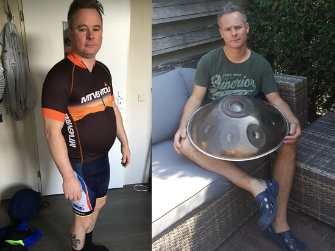
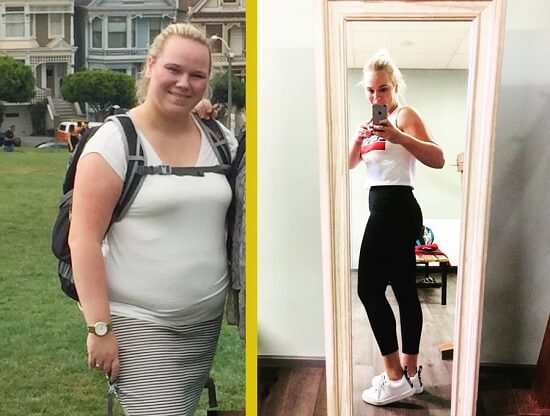
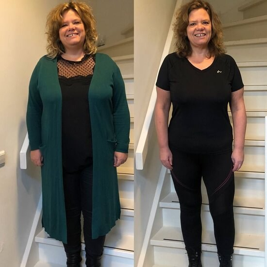
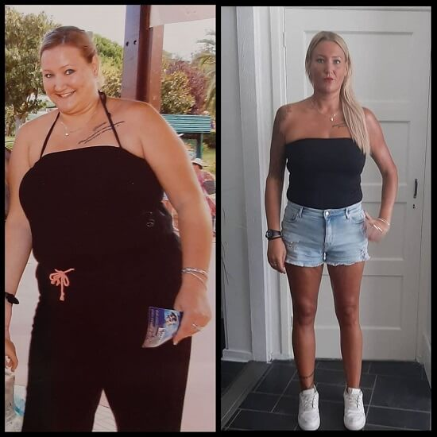
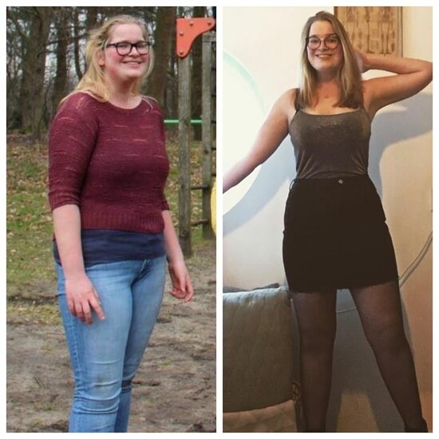
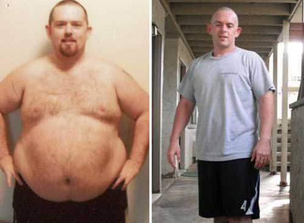
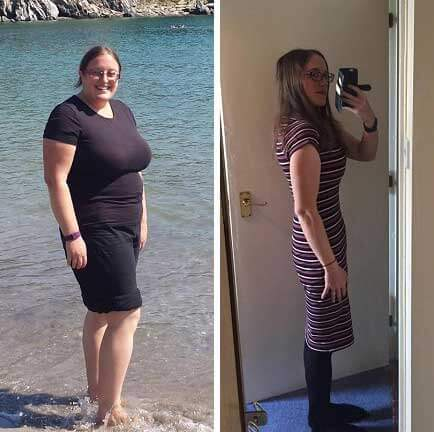
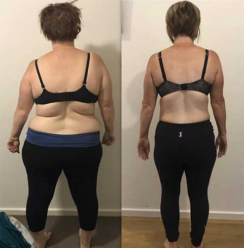

Eine revolutionäre entdeckung: Eine deutsche Medizinstudentin in Harvard hat eine Methode entdeckt, die Ihnen hilft, 52 kg in 28 Tagen zu verlieren
Die pharmagiganten wollen nicht, dass Sie es wissen!
- WOHLBEFINDEN
- LEBENSMITTELZUSATZSTOFF
- FOTOS DER ERGEBNISSE
- DIÄT
- ABNEHMEN


Ist das nicht das beste "vorher und nachher", das du gesehen hast?
Das ist Petra Bauer, eine der besten Medizinstudenten der Harvard University.
In 28 Tagen gelang es ihr, 52 Kilogramm zu verlieren! Sie hat es ohne Diät und Bewegung geschafft.
Ihre Spezialität ist die Nutriziologie. Und als Ergebnis der Experimente, die sie für ihre Diplomarbeit durchführte, entstand ein neues Produkt, von dem noch niemand zuvor gehört hatte.
Um zu beweisen, dass dies kein Zufall war, überzeugte sie ihre Tante Adeline, ein neues Heilmittel auszuprobieren:
Adeline hat in 1 Monat um 18 Kilogramm abgenommen.
Die Nachbarin Petra Maria aus ihrer Heimatstadt Leipzig hat dieses neue Produkt ausprobiert:

Maria hat in 2 Monaten 30 Kilogramm abgenommen.
Ein anderer Teilnehmer, der an der Studie mitgewirkt hat, Rudolf, hat ebenfalls hervorragende Ergebnisse erzielt:
Mit Hilfe von Petra hat Rudolph in 3 Monaten fast 50 Kilogramm abgenommen.
Sogar Harvard-Professoren und ihre Kollegen waren schockiert.

Trotz ihrer Skepsis verteidigte sie ihre Arbeit und sagte Folgendes:
"Ich kann jedem helfen, ähnliche Ergebnisse zu erzielen. Wenn Sie mit Ihrem Gewicht kämpfen... Sie können auch in 28 Tagen 52 Kilogramm abnehmen. Keine Diäten und Bewegung. Nur dank dieses einzigartigen Produkts".
Alle im Publikum waren schockiert.
Harvard-Professoren stritten sich. Alles schien zu gut zu sein, um wahr zu sein.
Aber Petra wollte beweisen, dass sie falsch liegen.
Sie wollte den Leuten beweisen, dass dieses Produkt wirklich funktioniert. Und dass es jede Möglichkeit der Gewichtszunahme blockiert.
Der Schlüssel zum Verlust von 52 kg in 28 Tagen.
Würdest du nicht so schnell abnehmen wollen?
Keine Sorge. Sie können solche Ergebnisse sehr schnell erhalten.
Aber bevor wir Ihnen den Weg erklären, lassen Sie uns darüber sprechen, wie Petra diese Entdeckung gemacht hat.
Wie ist Katarina zur Herstellung dieses Produkts gekommen?
Petra hat dieses revolutionäre Mittel zur Gewichtsreduktion im zweiten Jahr der Harvard Medical School entdeckt.
Wegen des Unterrichts und des Studiums waren gesunde Ernährung und Bewegung die letzten Dinge, an die sie dachte.
Aus diesem Grund hat sie im ersten Jahr ihrer Ausbildung an der Medizinischen Schule fast 30 Kilo zugenommen.
Und sie schämte sich als Nutritionist. Zumal es ihr Ziel war, anderen Menschen zu helfen, gesund zu bleiben!
Aber die Priorität zu diesem Zeitpunkt war das Studium und die hohen Noten, um sich nach Harvard gut zurechtzufinden.
Eines Nachts suchte Petra in der Bibliothek nach einem Buch für ihre Recherche.
Bei der Suche stieß sie auf eine Abteilung der Bibliothek, von der sie später erfuhr, dass sie nicht benutzt werden konnte.
Sie wählte ein Buch aus, das dem ähnelte, nach dem sie suchte.
Als sie durch die Seiten blätterte, erkannte sie, dass dies das falsche Buch war. Sie stieß jedoch auf ein Kapitel mit dem Titel "Inhaltsstoffe, die Fett blockieren".
"Unmöglich!", dachte sie.
Sie las jedoch weiter.
Dann hob sie ihre Augen auf und bemerkte, dass es sich tatsächlich um eine verbotene Abteilung handelte.
Aber diese Information war zu wertvoll. Also hat sie damals viele Notizen gemacht und alle wichtigen Informationen kopiert.
Sie dachte ständig an ihre Mission, Menschen zu helfen, gesund zu bleiben und Gewicht zu verlieren.
Auf der Toilette der Bibliothek schaute sie jedoch schnell in den Spiegel. Und sie erkannte, dass sie zuerst ihre Gewichtsprobleme lösen musste, bevor sie anderen helfen konnte.
Als Petra ihre Aufzeichnungen durchsuchte, wusste sie, dass sie etwas dagegen tun musste.
Inhaltsstoffe, die Fett blockieren
Sie musste eine neue Komponente verwenden, um Fett zu blockieren.
Glücklicherweise hatte sie Zugang zu einem Ernährungslabor an der Medizinischen Fakultät, das es ermöglichte, mit den Zutaten zu experimentieren.
Diese Zutaten waren ziemlich einfach und sie waren alle im Labor.
Nach Monaten von Blut und Schweiß, Tränen... durch Versuch und Irrtum...
....Petra hat es geschafft, die perfekte Mischung aus Zutaten zu sammeln
Das ist alles, was man braucht, um das Produkt auszuprobieren.
Petra hat alle Nachforschungen angestellt. Und innerhalb einer Woche hat sie bereits sieben Kilogramm abgenommen.
Dann, 14 Tage später, verlor sie weitere sieben Kilogramm an Gewicht.

Nach 21 Tagen hat sie weitere sieben Kilogramm abgenommen.
Und schließlich hat Petra nach 28 Tagen weitere vier Kilogramm abgeladen.
Das sind nur 52 kg in 28 Tagen!
Jetzt fragen Sie sich wahrscheinlich...
...Wie funktioniert ein fetthemmendes Produkt?
Dieses spezielle Produkt blockiert die Gewichtszunahme.
Und deshalb haben viele Menschen wie Sie Schwierigkeiten, Gewicht zu verlieren. Auch nach all den Diäten und Übungen.
Dieses verbotene Buch, das Petra in Harvard gefunden hat, erklärte, wie ein neues fetthemmendes Produkt funktioniert.
Im Wesentlichen ist Leptin ein Hormon in Ihrem Körper, das hilft, Ihren Appetit zu regulieren.
Dieses Hormon sendet Signale an Ihr Gehirn, mit dem Essen aufzuhören, wenn Ihr Körper mit dem Essen zufrieden ist.
Aufgrund der "Leptinresistenz" erreicht dieses Signal jedoch Ihr Gehirn nicht.
Dies führt dazu, dass Sie mehr essen, auch wenn Ihr Körper genug zu essen hat.
Ein neues fettblockierendes Produkt bekämpft Leptinresistenz.
Es löst dann Signale in dein Gehirn aus, dass du satt bist. Außerdem löst es eine Beschleunigung des Stoffwechsels aus.
Quellen aus diesem Teil des Buches berichten von frühen Experimenten der 1980er Jahre. Und ein Patient, der ausreichende Inhaltsstoffe verwendete, konnte in 32 Tagen 17 Kilogramm verlieren.
Auf diese Weise können Sie auch eine Gewichtszunahme blockieren und in einem Monat viele Kilos verlieren.
Aber...
...Was ist, wenn Sie einen verlangsamten Stoffwechsel haben oder Ihr ganzes Leben lang mit Gewichtszunahme zu kämpfen haben?
Keine Sorge.
Auch wenn Sie einen langsamen Stoffwechsel haben. Auch wenn Sie Ihr ganzes Leben lang dafür gekämpft haben, Gewicht zu verlieren. Oder selbst wenn Sie vor einer Hochzeit oder einem wichtigen Ereignis einfach viel Fett verlieren möchten.
Das neue Produkt bewältigt diese Aufgabe mit Leichtigkeit.
Nehmen wir zum Beispiel den 62-jährigen Alexander.
Er war einer von denen, die sein ganzes Leben lang mit einem langsamen Stoffwechsel zu kämpfen hatten. Er nahm leicht an Gewicht zu.
Als er dieses neue Produkt probierte, beschleunigte sich sein Stoffwechsel jedoch erheblich. Jetzt kann er fast alles essen, was er will.
Und immer noch fit bleiben!
Sehen Sie, wie Alexander in einem Monat von 102 kg auf 81 kg abgenommen hat:
Und es gibt auch eine 58-jährige Helena, die am Hochzeitstag ihrer Tochter abnehmen wollte.
Obwohl sie erst fünf Wochen vor der Hochzeit mit dem neuen Fettabbauprodukt begann, konnte sie die Größe um bis zu fünf Ziffern reduzieren!
Sehen Sie, wie Helena in Rekordzeit von 82 auf 58 Kilogramm abnehmen konnte:
Aber Nemanja (49), die die meiste Zeit ihres Lebens übergewichtig war. Sie hatte auch einen langsamen Stoffwechsel.
Dank einer neuen Art, Fett zu blockieren, konnte sie in ihre alte Kleidung vor 20 Jahren passen.
Was für eine erstaunliche Transformation!
Stellen Sie sich vor, Sie könnten einen Anzug oder ein Kleid tragen, das Sie seit Jahren nicht mehr getragen haben. Oder sie sehen auf allen neuen Fotos gut und schlank aus.
Dieses neue Produkt kann alle Ihre Träume verwirklichen!
Und mach dir keine Vorwürfe...
Übergewicht ist nicht deine Schuld.
Petra weiß, wie es ist, mit ihrem Gewicht zu kämpfen.
Als Medizinstudentin an der Harvard, die sich auf Ernährung spezialisiert hat, weiß sie, dass es nicht ihre Schuld ist.
Und nicht deins auch.
Als ich schockierende Fakten erfuhr, als ich mich in meine Forschung vertiefte.
Einige wohlhabende Harvard-Absolventen sind Teil der "Big Pharma". Und sie finanzieren den Großteil der Forschung und Experimente, die von Harvard-Professoren durchgeführt werden.
Die gesamte Forschung und der Lebensunterhalt der Professoren hängen von der Finanzierung des "Big Pharma" Clans ab.
Und rate mal was?
Es waren die gleichen Professoren, die ihren Behauptungen skeptisch gegenüber standen.
Sie waren sogar bei diesem Treffen zusammen mit Harvard-Absolventen, von denen bekannt ist, dass sie Schlüsselspieler bei "Big Pharma" sind.
Petra war sogar an diesen riesigen Spenden für die Experimente ihres Professors interessiert. Dies bezog sich auf den Bereich Ernährung.
Sie hat sich jedoch immer gefragt, warum dieser Professor sich für potenziell gefährliche und teure Medikamente einsetzt.
Anstelle einer sicheren, billigeren und effektiven natürlichen Schlankheitslösung.
Dank der Arbeit von Petra und dem Risiko, das sie eingegangen ist, können Sie die Vorteile eines neuen Schlankheitsmittels spüren.
Sie sind der erste, der diese bemerkenswerten Nachrichten öffentlich herausfindet.
Und Petra behauptet sogar, dass...
Dies ist die ultimative Lösung für Ihr Diätproblem
Sie werden nie wieder ein weiteres Schlankheitsergänzungsmittel, eine Diät oder einen speziellen Trainingsplan benötigen.
Warum?
Als Petra von diesen Zutaten erfuhr, musste sie einen Weg finden, dies in die Ernährungspraxis einzuführen.
Ihre Forschung führte zur Schaffung eines neuen Produkts.
Es macht all diese hochwertigen Zutaten verfügbar.
Und kann Ihnen helfen, 52 kg in 28 Tagen zu verlieren!
Im Gegensatz zu den meisten Schlankheitslösungen fördert diese geheime Komponente eine konsistentere Gewichtsabnahme.
Über einen längeren Zeitraum hinweg.
Prozentsatz der Nutzer, die Gewicht verloren haben
- - Benutzer, die traditionelle Diäten verwendet haben
- - Benutzer des neuen Produkts
| 13% |
| 97% |
Sie erhalten nicht nur schnelle Ergebnisse.
Und wenn Sie interessiert sind...
...sie werden dieses geheime Produkt nicht in den Läden sehen, weil Katarina gerade mit der Entwicklung dieser Formel fertig ist. Und deshalb hat Ihr Arzt dieses Produkt wahrscheinlich nie erwähnt.
Stell dir vor...
...Sie werden Ihre Pfunde nach dem Abnehmen nie wieder zurückbekommen. Jetzt ist es möglich.
Von nun an sehen Sie nur die "niedrigeren" Zahlen auf der Waage.
Und Petra möchte Sie daran erinnern...
Diese Jahreszeit ist die beste Zeit, um dieses Produkt auszuprobieren.
Petra und ihr Team haben gerade die ersten Chargen des Produkts veröffentlicht.
Und er ist der mächtigste, solange er noch neu ist.
Schnelles... Riesiges... Abnehmen.
Ihre Forschung hat höhere Gewichtsverlust Ergebnisse gezeigt Sonntag, Februar 18, 2024 im Vergleich zum Vorjahr.
Durchschnittliches Gewicht in einem Monat verloren
- - andere Monate des Jahres
- - Jänner, Februar
| 7 kg |
| 15 kg |
Aber beeilen Sie sich, denn neue Parteien enden SCHNELL:
Stellen Sie sich vor, Sie könnten dieses Produkt erhalten, bevor die aktuelle Charge abläuft?
Sie könnten in Jeans passen, die Sie seit Jahren nicht mehr getragen haben.
Sie können wieder essen, was Sie wollen...
...und Sie müssen sich keine Sorgen um Ihr Gewicht machen.
Und du wirst glücklicher und schlanker sein!
Aber warum wollte Petra dieses Produkt herstellen?
Petra möchte, dass andere einen ähnlichen Erfolg erzielen
Petra tut das nicht wegen des Geldes.
Sie möchte nur Menschen helfen, Gewicht zu verlieren, so wie sie es selbst getan hat. Das ist ihr Ziel als zukünftiger Ernährungsfacharzt.
Jede einzelne Diät – Paleo... Keto... Vegan...
...und auch verschiedene körperliche Aktivitäten wie Crossfit, Zumba...
...Aber keine dieser Methoden hat für sie funktioniert.
Sie musste sich etwas einfallen lassen, das für den Rest ihres Lebens funktionieren würde.
DAS GANZE LEBEN.
Bald werden Sie auch Ergebnisse der Gewichtsabnahme sehen, die Sie noch nie zuvor gesehen haben.
Sie müssen sich nicht auf die Ernährung beschränken. Denken Sie, wie viel Sie essen können.
Und kein Training erforderlich.
Stell dir vor, du siehst dich immer schlanker und schlanker im Spiegel.
Also...
Wie genau heißt dieses Produkt?

Es heißt Slimysol.
Und es gibt Ihrem Körper den nötigen Schub, um die richtigen Signale an Ihr Gehirn zu senden.
Erinnert Ihren Körper daran, dass Sie satt und zufrieden mit dem sind, was Sie gegessen haben.
Gewichtszunahme verhindern.
Neben der Blockierung von Fett führt Slimysol Ihren Körper in Ketose ein.
Dies verwandelt Ihren Körper in eine Fettverbrennungsmaschine.
Es ist jedoch üblich, eine strenge Keto-Diät einzuhalten, um eine Ketose zu erreichen.
Aber Petra und viele andere haben es selbst erlebt...
...es ist schwierig, sich über einen längeren Zeitraum an die Keto-Diät zu halten.
Slimysol ahmt nach, was die Keto-Diät für Ihren Körper tut, und multipliziert das Ergebnis mit 3.
Schauen Sie sich einfach den durchschnittlichen Gewichtsverlust von denen an, die auf einer Keto-Diät sitzen und Slimysol Benutzer in Petra-Experimenten verwenden:
Der durchschnittliche Gewichtsverlust ist mit der Keto-Diät und mit Slimysol
- - Abnehmen mit einer Keto-Diät
- - Abnehmen mit Slimysol
| 6 kg |
| 22 kg |
...und was ist das Beste?
Sie müssen sich nicht an eine Diät halten oder Sport treiben, um diese Ergebnisse zu erzielen.
Schauen Sie sich diesen Test an, der bei zwei Patienten durchgeführt wurde.
Petra sagte, dass eine Frau einen Monat lang an der traditionellen Keto-Diät festhielt, während eine andere Frau Slimysol verwendete.
Eine Frau, die sich mit traditionellem Keto beschäftigte, verlor etwa 10 Kilogramm:
Die Frau, die das Mineral Spark verwendete, saß jedoch NICHT auf Diät und machte keinen Sport...
...sie hat in einem Monat 30 kg verloren.
Einer der wenigen Harvard-Professoren, der Petra's Entdeckungen unterstützt, sagt:
"Das Slimysol-Produkt, das Petra entdeckt hat, ist revolutionär. Es ist einfach zu bedienen. Und Sie haben die schnellsten Gewichtsverlust Ergebnisse ohne Diät oder einen komplizierten Trainingsplan. Es gibt auch keine Nebenwirkungen. Empfehle".
Verabschieden Sie sich von schweren körperlichen Aktivitäten und Diäten...
...und lernen Sie einen einfacheren und effektiveren Weg kennen, um Gewicht zu verlieren.
Sie sind wahrscheinlich daran interessiert zu wissen, wie Sie dies in Ihr Stromnetz einführen können.
Das ist einfach...
Weil...
Dies ist die einfachste Lösung zum Abnehmen.
Warum ist dies der einfachste Weg, um Gewicht zu verlieren?
Verwenden Sie es einfach zweimal am Tag. Sie können auch 52 kg in 28 Tagen fallen lassen!
Keine Notwendigkeit für Diäten und Trainingseinheiten.
Ohne Kalorienzählen oder Essensbeschränkungen.
Keine anstrengenden Trainingseinheiten.
Sie glauben es nicht?
Sieh dir an, wie Hannah in 27 Tagen um 20 kg abgenommen hat:
Sie sagte: "Ich war schockiert. Als ich bei Petra untersucht wurde, sagte mir ihr Team, dass ich auf keinen Fall Diäten und Übungen brauche. Nehmen Sie dieses Produkt einfach zweimal täglich ein. Es war noch nie so einfach, 20 kg in weniger als einem Monat zu verlieren".
Aber Hermanns Ergebnisse in 29 Tagen:
Er sagt: "Ich hasse es zu trainieren. Und lass mich nicht auf Diät sitzen... Petra sagte jedoch, dass Sie nur den einfachen Anweisungen zur Einnahme des Geldes folgen müssen. 29 Tage später bin ich 22 Kilo leichter. Ich trank sogar Bier und aß jedes Wochenende Pizza. Danke, Petra!"
Hier ist ein Vergleich von Menschen, die sich an die traditionelle Ernährung und Bewegung halten, mit denen, die Slimysol verwendet haben:
Durchschnittlicher Gewichtsverlust: Mit Diäten und mit Slimysol:
- - Traditionelle Diäten und Trainingseinheiten
- - Slimysol
| 10% |
| 92% |
Es ist nicht schwer.
92% der Slimysol-Nutzer haben in einem Monat mehr als 23 Kilogramm verloren, aber nur 10% haben dies mit traditionellen Schlankheitsmethoden erreicht.
Hinweis: Slimysol-Benutzer durften jedes Essen essen. Es gibt keine Begrenzung für die Menge oder Art des Essens. Sie durften auch Alkohol trinken.
Stellen Sie sich vor, Sie könnten all das Essen genießen, das Sie lieben. Und Sie müssen nicht trainieren...
...um einen Traumkörper zu bekommen.
Tragen Sie Ihren Lieblings-Badeanzug oder Badehose am Strand mit vollem Vertrauen.
Weil du in der besten Form deines Lebens bist.
So ist schnelles Abnehmen großartig...
Aber...
Besteht das Risiko, wieder an Gewicht zuzunehmen?
Nein, es besteht kein Risiko, wieder an Gewicht zuzunehmen.
Alma hat ihr ganzes Leben lang auf Diät gesessen. Und sie benutzte verschiedene Diäten und war süchtig nach Bewegung.
Nichts hielt ihr Gewicht stabil.
Als Alma jedoch an Katharinas Studien teilnahm, verlor sie in 26 Tagen 35 Kilogramm:
Die wirkliche Überprüfung dieses Mittels erfolgte sechs Monate später.
Alma konnte ihren schlanken, straffen Körper immer noch aufrechterhalten .
An Tilmann änderte sich nichts, nachdem er mit Slimysol abgenommen hatte – er verlor sogar nach sechs Monaten Arbeit mit Petra die zusätzlichen fünf Kilo. Er verlor insgesamt 30 Kilo:
Gisele eine andere von denen, die an Petra's Studie teilgenommen haben, hinterließ sechs Monate nach dem Abnehmen einen Kommentar:
"Nachdem ich in 30 Tagen 26 Kilogramm abgenommen habe, habe ich sechs Monate lang nichts geändert. Und rate mal was? Ich sehe immer noch aus, wiege und fühle mich genauso!"
Das ist Giselles Fortschritt:
Wenn Sie schon immer einen Jo-Jo-Effekt hatten, können Sie endlich herausfinden, wie es ist, das Gewicht stabil zu halten…
... Jederzeit.
Sie fragen sich wahrscheinlich...
Ist Slimysol sicher?
Da es sich um gut untersuchte natürliche Inhaltsstoffe handelt, ist Slimysol vollkommen sicher.
Keine Nebenwirkungen!
Sehen Sie sich diesen Vergleich traditioneller Fatburner mit Slimysol an:
Prozentsatz derer, die Nebenwirkungen haben:
- - Benutzer traditioneller Diäten
- - Slimysol-Benutzer
| 72% |
72% der Menschen, die traditionelle Diäten verwendeten, hatten Nebenwirkungen, während solche bei Slimysol-Nutzern völlig fehlten (0%).
Und sehen Sie, was einige dieser Studienteilnehmer sagen:
"Slimysol hat mir geholfen, 30 kg zu verlieren, und ich hatte keine Nebenwirkungen."
- Timo

Ich war skeptisch gegenüber Slimysol... weil traditionelle Diäten mich immer nervös gemacht haben. Aber mein Körper hat die Zutaten gut aufgenommen, und ich konnte in einem Monat mehr als 23 Kilo abnehmen.
- Sofia
Also, wenn Sie sich darüber Sorgen machen, haben Sie mit Slimysol nichts zu befürchten.
Stellen Sie sich diese Pfunde vor, die Sie ohne Anstrengung verlieren werden.
Gut, jetzt stellt sich die nächste große Frage...
Wie kann ich Slimysol kaufen?
Heute ist dein Glückstag!
Petra und ihr Team haben endlich die Zustimmung der Investoren erhalten und können dieses Produkt jetzt für die breite Öffentlichkeit freigeben.
Jede Slimysol-Verpackung wird mit der erforderlichen Menge an Zutaten in jeder Dosis geliefert.
Petra's Team hat Millionen von Dollar in Forschung und Entwicklung investiert Slimysol-a.
Normalerweise kostet die Verpackung dieses hochwertigen Schlankheitsmittels ungefähr 130 Euro pro Stück.
aber... es ist nicht etwas, das Sie für die Verpackung bezahlen werden Slimysol.
Wir werden bald zum richtigen Preis kommen, aber zuerst...
Was sagen die Leute jetzt über Slimysol?

Ich habe von Petras erfolgreicher Forschung gehört, aber ich dachte, es wäre zu gut, um wahr zu sein. Na... nach 23 Tagen habe ich 19 kg abgenommen! Ich wünsche allen, die es versuchen, viel Glück Slimysol.”
-Frieda Berger

"Versuchen Sie. Ich habe in einem Monat 15 kg abgenommen."
- Rosa Klein
Ich hatte mein ganzes Leben lang Übergewicht. Keine Diät oder Trainieren hat jemals funktioniert. In 25 Tagen habe ich zum ersten Mal in meinem Leben mehr als 16 kg verloren. Das ist so einfach. Danke, Petra!
- Robert Schneider

"Ich war schockiert, als meine Freunde Slimysolanboten... Eine Freundin hat mir sogar geraten, keinen Sport zu treiben und sich nicht an einen bestimmten Ernährungsplan zu halten. In 30 Tagen habe ich es geschafft, ungefähr 22 kg zu verlieren. Das war unglaublich."
-Christa Hase
Ich habe im ersten Monat um 20 kg abgenommen! Ich habe sogar aufgehört zu trainieren, als ich angefangen habe, Slimysol zu verwenden. Ich empfehle es von ganzem Herzen.
- Ottilie Hoffmann
Vor dem Hintergrund all dieser positiven Rückmeldungen wissen Sie, dass...
Petra hat diese harte Arbeit geleistet, weil sie sich nicht darum kümmert.
Sie versteht, wie es ist, Gewichtsprobleme zu haben.
Wie fühlt es sich an, wenn das Gewicht ein Leben lang zunimmt und abnimmt.
Und jetzt, da sie die perfekte Formel zur Gewichtsreduktion hat, möchte sie, dass so viele Menschen wie möglich erhalten Slimysol.
Natürlich wollen Petra's Investoren nicht, dass dies der Fall ist, aber Petra möchte den Menschen nur helfen, Gewicht zu verlieren…
...wie sie in 28 Tagen 52 kg verloren hat.
Anstatt 7400 für die Verpackung von Slimysol zu bezahlen, hat Petra einen Vertrag für eine begrenzte Zeit abgeschlossen.
Sie bietet jetzt eine Tombola an, an der Sie teilnehmen und einen Slimysol-Rabatt erhalten können.
Nun, wenn Sie immer noch zögerlich sind...
Was haben Sie zu verlieren?
Sie haben zwei Möglichkeiten.
Option №1: Sie entscheiden, dass Slimysol nicht für Sie ist.
Alles ist gut.
Sie können diese Seite verlassen und Ihr Leben fortsetzen. Und in der Form zu bleiben, in der Sie jetzt sind. Im gleichen Gewicht bleiben.
Daran ist nichts falsch.
Oder...option №2: Sie können Verantwortung für Ihr Leben übernehmen und die Verpackung erhalten Slimysol...
...und in 28 Tagen um 52 kg abnehmen.
Die Wahl liegt nur bei Ihnen!
Wenn Sie bereit sind, all diese Pfunde heute zu verlieren, klicken Sie auf den Button unten und erhalten Sie eine KOSTENLOSE Verpackung Slimysol!
(Holen Sie sich jetzt, bevor sie ausgehen)
Hinweis: Leni und ihre Patienten haben Slimysol verwendet, um deutlich an Gewicht zu verlieren.

Aktualisierung des Produktinventars: Produkttests noch verfügbar ab: Sonntag, Februar 18, 2024
Rabatte auf Slimysol sind nur für Besucher unserer Website verfügbar!
Drücken Sie die "Spin"-Taste und gewinnen Sie einen Rabatt! Viel Erfolg!
 SPIN
SPIN
Carla Vogel
Es ist ein Wunderprodukt!!! Ich möchte es auch kaufen. Ich habe meinen Urlaub 10 Mal hintereinander abgesagt!
Leonie Weisberg
Worauf warten Sie noch? Bestellen wir das, Mädchen, und fangen wir an, Gewicht zu verlieren Slimysol-om! Sie bieten eine kostenlose Probe an, die Sie vor dem Kauf überprüfen können, um sicherzustellen, dass Sie sicher sind.
Regina Frank
Ich habe es schon gekauft. Schau dir das Ergebnis an. Ich habe meine Ernährung nicht geändert oder Sport getrieben. Foto vorher/Foto danach
Rieke Braun
Hervorragende Ergebnisse
Karoline Weber
Die wichtigsten Veränderungen finden in dir statt. Zuerst wechselst du dich von außen und fühlst dich dann emotional glücklich wie nie zuvor!
Ute Müller
Ich stimme völlig zu! Nachdem ich mit diesem Produkt angefangen habe, hat mein Mann wieder Interesse an mir gezeigt, wir erleben die zweiten Flitterwochen, wir haben häufiger Sex als vor 20 Jahren! Das Beste daran ist, dass das Abnehmen keine Anstrengung erfordert, es ist so einfach und bequem!
Till Schulz
Hier sind meine Fotos. Ich schäme mich so sehr dafür, wie ich aussehe! Ich habe viele andere Lebensmittel ausprobiert, ein Fitnessstudio und eine gesunde Ernährung, es hat funktioniert, aber nur für kurze Zeit, und am Ende habe ich noch mehr an Gewicht zugenommen. Es hat mich viel Geld, Zeit und Mühe gekostet. Aber mit dem Tee Slimysol habe ich sehr schnell und sehr leicht abgenommen. Ich habe zuerst eine kostenlose Probe bestellt und habe vom ersten Tag an erkannt, dass dieses Produkt tatsächlich funktioniert. Ich habe dann einen kompletten Kurs gebucht, der sehr erschwinglich war. Jeder sollte es versuchen.
Mark König
Ich bestätige es! Slimysol funktioniert auch in Problembereichen sehr gut, das Fett fließt gleichmäßig aus dem ganzen Körper. Dies ist seit den ersten Tagen der Anwendung des Produkts offensichtlich.
Helene Neumann
Ich bin 53 Jahre alt, glauben Sie, dass es in meinem Alter helfen wird?
Elsa Koch
Es sollte helfen. Wie auch immer, es ist das beste aller Produkte, die ich je ausprobiert habe.
Berta Zimmermann
Ausgezeichnete Droge! Ich habe die kostenlose Probe geschätzt. Wenn Sie es aus irgendeinem Grund nicht mögen, kostet es Ihnen nichts. Es hat mir geholfen. Und ich teile meinen Erfolg.
Gregor Eisenstein
Wie lange haben Sie gebraucht, um Gewicht zu verlieren?
Berta Zimmermann
Ungefähr einen Monat.
Eva Stocker
Ich bin so froh, dass ich Slimysol gefunden habe! Meine Lebensqualität hat sich erheblich verbessert. Ich bin wieder eine glückliche Frau... Danke!
Johanna Miller
Sie denken, ich bin erst 30 Jahre alt, das ist großartig! Früher schämte ich mich für mein Aussehen, und jetzt glauben sie es nicht, wenn ich sage, dass ich 43 Jahre alt bin.
Wolfgang Gössen
Meine Frau und ich haben den Kurs absolviert und mehr als 60 kg verloren. Fitnessstudios sind nicht notwendig, um Gewicht zu verlieren. Dieses Produkt ist einfach super und sehr einfach, damit Gewicht zu verlieren.
Gerda Richter
Heute kann jeder einen schönen und schlanken Körper haben, nicht nur Menschen mit guter Genetik und viel Freizeit zum täglichen Trainieren im Fitnessstudio.
Oskar Ansbach
Es hat nur drei Wochen gedauert, bis ich meine Fettmasse wieder unter Kontrolle gebracht habe. Der schnellste Gewichtsverlust aller Zeiten.
Laura Bachmann
Es ist so einfach, alles, was Sie tun müssen, ist, dieses Mittel einfach einzunehmen.
Sven von Harsdorf
Bestellen Sie eine kostenlose Probe und Sie werden sofort verstehen, was es ist!